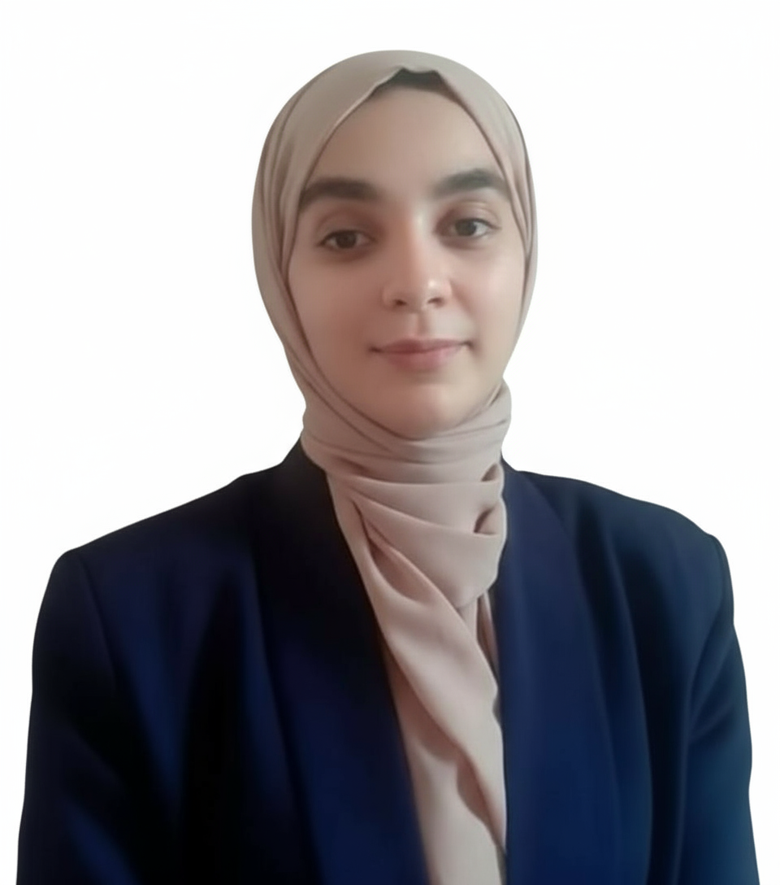

Ingénieure en Réseaux Intelligents & Cybersécurité diplômée de l'ENSA Khouribga, spécialisée en SOC, GRC et gestion des identités, avec une expertise pratique des environnements critiques IT/OT.
Ingénieure cybersécurité diplômée, dotée d'une vision transverse de la sécurité défensive et offensive. Rigoureuse et passionnée par les opérations de sécurité complexes (SOC), l'analyse de risques (GRC), la gestion des identités et des accès (IAM) ainsi que l'ingénierie d'infrastructures sécurisées IT/OT. Forte d'une expérience de fin d'études chez Devoteam Cyber Trust Africa centrée sur la conception d'un SOC interne automatisé, je suis désormais prête à intégrer une équipe pour relever des défis techniques de haut niveau.
Conception de cas de détection avancés, corrélation d'alertes, création de règles Wazuh personnalisées et validation par simulations d'attaques contrôlées.
Détection des comportements réseau anormaux via un modèle hybride CNN-BiLSTM avec mécanisme d'attention focale, entraîné et évalué sur le dataset NSL-KDD.
Déploiement d'une authentification sans mot de passe via Keycloak WebAuthn, Passkeys et clés matérielles, avec un framework de Device Trust (Osquery) corrélé via Wazuh SIEM et ELK.
Automatisation du scan, de la corrélation et du suivi des vulnérabilités via DefectDojo, intégrant OWASP ZAP, Trivy, OpenVAS et Nmap.
Simulation d'attaques web et cloud, exploitation de vulnérabilités applicatives et mise en œuvre de contre-mesures (configuration WAF).
Déploiement, configuration et tests d'exécution de workloads quantiques distribués dans un environnement cloud.
Disponible pour toute opportunité professionnelle de collaboration ou simplement pour échanger autour de la cybersécurité.
Ingénieure Cybersécurité · Spécialité SOC & GRC